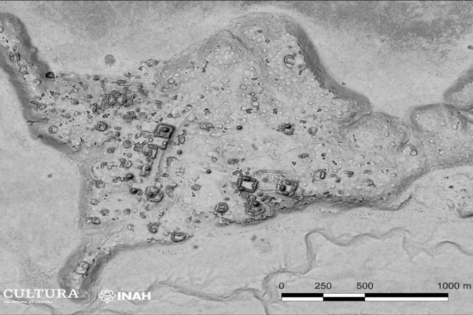

မက္ကဆီကို နိုင်ငံက ရှေးဟောင်း သုတေသီ တွေဟာ ပျောက်ဆုံးနေတဲ့ မာယာရှေးမြို့ဟောင်း တစ်ခုကို ယူကာတန် ကျွန်းဆွယ် (Yucatán Peninsula) က တောနက်ကြီးထဲမှာ ရှာဖွေ တွေ့ရှိ ခဲ့ကြပါတယ်။
မက္ကဆီကို နိုင်ငံ၊ ကန်ပီချီ ပြည်နယ် (Campeche State) က ကာကွယ်စောင့်ရှောက်ထားတဲ့ တောနက်ကြီး တစ်ခုအတွင်းမှာ ဒီ ရှေးမြို့ဟောင်းကို ရှာတွေ့ခဲ့ကြတာ ဖြစ်ပါတယ်။
အခု တွေ့ရှိရတဲ့ မြို့ဟောင်းမှာ ကြီးမားတဲ့ ပိရမစ်တွေ အများအပြား ရှာတွေ့ခဲ့ ကြပါတယ်။ ဒီ ပိရမစ် တွေကို မာယာ ယဉ်ကျေးမှု အထွတ်အထိပ် ရောက်ခဲ့တဲ့ အေဒီ ၂၅၀ ကနေ အေဒီ ၁၀၀၀ အကြားမှာ တည်ဆောက်ခဲ့ကြတာ ဖြစ်မယ်လို့ ပညာရှင် တွေက ခန့်မှန်း ကြပါတယ်။
ပညာရှင်တွေက ယခု ရှာဖွေတွေ့ရှိတဲ့ ရှေးဟောင်း သုတေသန ရပ်ဝန်းကို Ocomtún လို့ အမည်ပေးထားပါတယ်။ ဒီစကားလုံးဟာ ရှေး ယူကာတက် မာယာ ဘာသာစကား (Yucatec Maya) နဲ့ ကျောက်တိုင် လို့ အမည်ရပါတယ်။
ဒီ ရှေးဟောင်းမြို့ရဲ့ အကျယ်အဝန်းဟာ ယခုထိ ရှာဖွေ တွေ့ရှိရသမျှ ၁၂၄ ဧကခန့် ကျယ်ဝန်းပါတယ်။ ဒီ မြို့ဟောင်းကို ကောင်းကင် မြေတိုင်း သုတေသန လေယာဉ်မှာ တပ်ဆင်ထားတဲ့ လေဆာ တိုင်းတာရေး ကိရိယာကို အသုံးပြုပြီး ရှာဖွေ ခဲ့တာ ဖြစ်ပါတယ်။ ဒီလို ရှာဖွေ တွေ့ရှိဖို့ အတွက် လေဆာရောင်ခြည်တန်းပေါင်း သန်း ထောင်ချီ ပစ်လွှတ်ပြီး မြေပြင်မြေပုံ ရေးဆွဲခဲ့ရတာ ဖြစ်ပါတယ်။
အခုလို လေဆာရောင်ခြည် အသုံးပြုပြီး ရှေးဟောင်း မြို့ဟောင်းတွေ ရှာဖွေတာဟာ အသစ်အဆန်းတော့ မဟုတ်ပါဘူး။ ဒီစနစ်မှာ လေဆာရောင်ခြည်ကို အသုံးပြုပြီး သစ်ပစ်သစ်တောတွေ အတွင်း ဖုံးလွှမ်းနေတဲ့ လူလုပ် အရာဝတ္ထုနဲ့ အဆောက်အဦး တွေကို ရှာဖွေ ပေးနိုင်ပါတယ်။
အခု ရှာဖွေ တွေ့ရှိမှုမှာ တွေ့ရှိရတဲ့ ပိရမစ်တွေ အနက် အမြင့်ဆုံး ပိရမစ်ဟာ အမြင့်ပေ ၅၀ ခန့်ထိ မြင့်မားပါတယ်။ ဒီထက် သေးငယ်တဲ့ ပိရမစ်တွေလဲ အများအပြား ရှာဖွေ တွေ့ရှိ ခဲ့ပါသေးတယ်။
အခုရှာတွေ့တဲ့ အဆောက်အဦ တွေဟာ ရှေးမြို့ဟောင်း အတွင်းက ဘာသာရေး ဆိုင်ရာ အခမ်းအနားတွေ ကျင်းပရာ အဆောက်အဦတွေ ဖြစ်မယ်လို့ ပညာရှင် တွေက ယူဆကြပါတယ်။ ဘာသာရေး ပွဲလမ်းသဘင်တွေ၊ အခမ်းအနား တွေနဲ့ ယဇ်ပူဇော် မှုတွေ ကို ရှေးမာယာတွေက ပိရမစ်ပုံ အဆောက်အဦတွေမှာ ပြုလုပ်လေ့ ရှိကြပါတယ်။
ရှေးမာယာ လူမျိုးတွေဟာ မက္ကဆီကို နိုင်ငံ တောင်ပိုင်း အနှံ့အပြားနဲ့ အမေရိက အလယ်ပိုင်း ဒေသတွေမှာ မြို့ အများအပြား တည်ဆောက်ခဲ့ ကြပါတယ်။ မာယာ နိုင်ငံတော်ဟာ အေဒီ ၂၅၀ ကနေ စတင် အင်အား ကြီးထွားလာခဲ့ရာက အေဒီ ၈၀၀ နဲ့ ၁၀၀၀ အကြားမှာ ပြိုကွဲ ပျက်စီး ခဲ့ရပါတယ်။ ဒါပေမယ့် ယခု အချိန်အထိ မာယာ လူမျိုးတွေဟာ မက္ကဆီကို တောင်ပိုင်းနဲ့ အမေရိက အလယ်ပိုင်း (Central America) ဒေသတွေမှာ ဆက်လက် နေထိုင် နေကြဆဲ ဖြစ်ပါတယ်။
အခု ရှာတွေ့တဲ့ မြို့ဟောင်းကို လက်တွေ့ ကွင်းဆင်း လေ့လာ ခဲ့ရာမှာ လေဆာမြေပုံက ရှာဖွေ ပေးခဲ့တဲ့ ပိရမစ်တွေ အပြင် အိုးခြမ်းကွဲတွေ၊ ဈေး ၃ ဈေး နဲ့ ဘောလုံးကွင်း တစ်ကွင်း တို့ကိုလဲ ရှာဖွေ တွေ့ရှိ ခဲ့ပါသေးတယ်။ (ဘောလုံးကန် တာကို ဥရောပ တိုက်သားတွေက တောင်အမေရိက ဒေသခံ တွေဆီက ရရှိခဲ့တာပါ။) နောက်ပြီး စက်ဝိုင်းပုံ ဝိုင်းပတ် တည်ဆောက်ထားတဲ့ အဆောက်အဦ ပျက်တွေကိုလဲ တွေ့ရှိ ခဲ့ပါသေးတယ်။
အခု တွေ့ရှိခဲ့တဲ့ ရှေးဟောင်း အဆောက်အဦတွေ အနက်က အချို့ အဆောက်အဦတွေကို ဘယ်လို အသုံးချ ခဲ့သလဲဆိုတာကို ပညာရှင်တွေ အကြားမှာ ပဟေဠိ ဖြစ်နေရပါတယ်။ ဒီ အဆောက်အဦ တွေဟာ ဈေးတွေ ဖြစ်နိုင်သလို အချို့ကိုတော့ မြို့တွင်းမှာ ယဇ်ပူဇော်ရာ နေရာတွေအဖြစ် အသုံးချတာ ဖြစ်နိုင်တယ်လို့ ပညာရှင် အချို့က ခန့်မှန်း ကြပါတယ်။
Ref: Lost Maya city discovered deep in the jungles of Mexico | Live Science
ပျောက်ဆုံးနေသော မာယာရှေးမြို့ဟောင်း မက္ကဆီကို တောနက်ကြီးထဲတွင် ရှာတွေ့

July 4, 2023
Other Posts
- မဟာပိရမစ်ကြီး အတွင်း လှို့ဝှက်ခန်း ရှာတွေ့
- အနာဂါတ်နည်းပညာ နယ်ပယ်တွေမှာ တိုးချဲ့ သုတေသန ပြုမယ့် ဟွန်ဒါ
- Drone တွေကို ပစ်ချမယ့် Drone Gun Tactical
- မိမိကလေးရဲ့ ကိုယ့်ကိုယ်ကို တန်ဖိုးထားမှုကို မြှင့်တင်ပေးနိုင်မယ့် ရှင်းလင်းလွယ်ကူတဲ့ နည်းလမ်း ၈ ချက်
- ဖုန်းတွေဟာ အိမ်သာထိုင်ခုံထက် ၁၀ ဆပို ညစ်ပတ်ပါတယ်
- ဘာ့ကြောင့် ဂြိုဟ်တွေဟာ လုံးနေရတာလဲ
- ဂျိမ်းစ်ဝက်ဘ် ၏ အနီအောက်ရောင်ခြည် ကင်မရာ တစ်လုံးနှင့် အဆက်အသွယ် ပြတ်တောက်သွား
- အင်္ဂါဂြိုဟ်ပေါ်က မျက်နှာကြီး
- ကမ္ဘာ့ဗဟိုအူတိုင် အပူချိန် ပိုမိုလျှင်မြန်စွာ အေးလာနေ
- စကြာဝဠာအား ကွန်ပြူတာပေါ်တွင် တည်ဆောက်ခြင်း